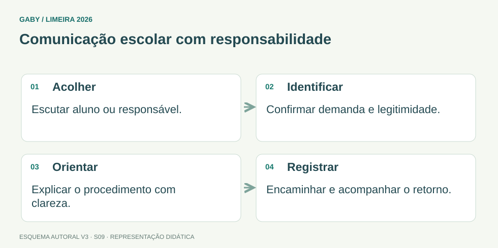

Objetivos do módulo
- Atender público interno e externo com clareza, respeito e eficiência.
- Aplicar escuta ativa e comunicação objetiva em situações escolares.
- Saber registrar recados, solicitações e encaminhamentos.
- Lidar com atendimento presencial e telefônico sem expor dados indevidamente.
- Aplicar ao atendimento da secretaria as diretrizes do art. 5º da Lei 13.460/2017, em especial urbanidade, cortesia e linguagem simples.
- Organizar o atendimento prioritário pela Lei 10.048/2000, pelo Estatuto da Pessoa Idosa e pela Lei Brasileira de Inclusão.
- Reconhecer as espécies de barreira e os direitos de comunicação da pessoa com deficiência (LBI, arts. 3º, 4º, 9º, 28 e 63).
- Explicar por que todo funcionário de escola é educador, segundo o Profuncionário e o art. 61, III, da LDB.
- Conhecer os deveres de articulação com as famílias e de transparência da LDB (arts. 12, 13, 14 e 14-A).
- Redigir avisos às famílias com clareza, precisão, objetividade, concisão, coesão e padronização.
Comunicação escolar com responsabilidade

Descrição em texto do esquema
- Acolher: Escutar aluno ou responsável.
- Identificar: Confirmar demanda e legitimidade.
- Orientar: Explicar o procedimento com clareza.
- Registrar: Encaminhar e acompanhar o retorno.
Oficina visual · aplique o esquema
Uma pessoa liga pedindo notas e endereço de um aluno, sem se identificar. Qual é uma conduta adequada?
Atividade autoral complementar da V3. Registre sua resposta; a resolução está no arquivo de gabarito e revisão.
Mapa do conteúdo
- 1. Qualidade no atendimento
- 2. Escuta ativa e clareza
- 3. Atendimento telefônico
- 4. Situações de conflito
- 5. Encaminhamento e registro
- 6. Lei 13.460/2017 na secretaria escolar
- 7. Atendimento prioritário
- 8. Pessoa com deficiência: barreiras e comunicação (LBI)
- 9. Todo funcionário de escola é educador
- 10. Escola, famílias e transparência na LDB
- 11. Comunicados às famílias
1. Qualidade no atendimento
Atendimento de qualidade combina cortesia, precisão, agilidade possível e respeito às normas. Ser cordial não significa prometer o que não pode ser cumprido; ser eficiente não significa pular controles.
O objetivo é compreender a demanda, fornecer informação correta ou encaminhar ao responsável competente e deixar registro quando necessário.
2. Escuta ativa e clareza
Escuta ativa exige atenção à fala do usuário, confirmação do que foi entendido e perguntas objetivas quando a solicitação estiver ambígua. Evite interromper, ironizar ou usar jargão interno sem explicação.
Uma técnica simples é repetir a demanda em forma de confirmação: “Então, a senhora precisa da segunda via do histórico para matrícula em outra instituição, correto?”
O que a escuta ativa exige
Escuta ativa é prestar atenção total à pessoa: ouvir a fala até o fim, sem interrupções, sem julgamentos e sem distrações, para compreender antes de responder. O Guia de Atendimento ao Público da Infra S.A., empresa pública federal usada aqui como referência de boas práticas, resume a ideia: ouvir para compreender, e não para responder, sem deixar que as próprias emoções conduzam o atendimento.
| Faça | Evite |
|---|---|
| Parar o que está fazendo e olhar para a pessoa. | Digitar, mexer no celular ou conversar com um colega enquanto ela fala. |
| Deixar a pessoa terminar e só então perguntar. | Cortar a fala para adiantar a resposta. |
| Ouvir sem rótulos prévios sobre a pessoa ou a família. | Decidir o que ela quer antes de ela explicar. |
| Resumir o pedido para confirmar o entendimento. | Responder ao que imaginou, e não ao que foi dito. |
Quando a pessoa não entende a orientação
Dúvida não é falta de capacidade. Se o estudante ou o responsável não entendeu, o atendente reformula a explicação com outras palavras, divide em passos e verifica o que ainda ficou pouco claro: “Qual parte ficou confusa, o documento ou o prazo?”. Não ridiculariza a pergunta, não encerra o atendimento por causa dela e não expõe a pessoa diante de outras. É o diálogo educativo que o Profuncionário propõe (seção 9).
Repetir a mesma frase, mais alto, não é reformular. Trocar termos técnicos por palavras comuns é o que manda a Lei 13.460/2017, art. 5º, XIV: linguagem simples e compreensível, sem siglas, jargões e estrangeirismos (seção 6).
3. Atendimento telefônico
Ao telefone, identifique a unidade e, conforme padrão institucional, o atendente. Registre nome, contato, assunto e destinatário do recado quando necessário.
Não revele dados pessoais apenas porque a pessoa diz ser parente. Confirme identidade e legitimidade conforme regras da escola antes de fornecer informação protegida.
Condutas no atendimento telefônico
Ao telefone, o usuário não vê quem atende: a voz e a organização da conversa fazem todo o trabalho. As condutas abaixo seguem o Guia de Atendimento ao Público da Infra S.A. (referência federal de boas práticas, item 4.3) e concretizam a urbanidade e a cortesia do art. 5º, I, da Lei 13.460/2017.
| Momento | Conduta adequada | Conduta inadequada |
|---|---|---|
| Atender | Atender prontamente, sem deixar o telefone tocar sem necessidade. | Deixar tocar até a pessoa desistir. |
| Abrir a conversa | Identificar-se: escola, setor, nome e cumprimento (“Escola Municipal Ipê, secretaria, Marta, bom dia”). Em seguida, perguntar com cortesia com quem fala: “Com quem eu falo, por favor?”. | Abrir com “Quem fala?” ou “Quem é?”, sem se identificar. |
| Ouvir | Concentrar-se na ligação, ouvir até o fim e anotar o nome e o pedido. | Atender fazendo outra tarefa; interromper. |
| Informar | Ser objetivo, com linguagem acessível. Se a resposta for negativa, dizê-la sem rodeios, em tom educado, e indicar o caminho correto. | Expressões negativas ou evasivas: “isso não é comigo”, “ligue depois”, “eu acho”. |
| Responsabilizar-se | Assumir a resposta como sua: resolver ou encaminhar e dizer o que será feito; combinar retorno quando precisar consultar alguém. | Transferir sem explicar; prometer o que não pode cumprir. |
| Encerrar | Agradecer, colocar-se à disposição e não desligar antes do usuário. | Encerrar de modo brusco. |
Apoio e postura durante a ligação
- Material à mão: papel e caneta (ou o sistema de registro aberto) e a lista de ramais, para anotar o recado e transferir sem deixar a pessoa esperando.
- Não ouviu bem? Peça para repetir. Pedir com educação que a pessoa repita um nome ou um número não é desatenção; anotar errado é que prejudica o usuário. Confirme dados lendo-os de volta: “O nome do estudante é Davi Rocha, do 3º ano A, correto?”.
- Voz calma e agradável: problemas pessoais e a irritação do dia ficam fora da ligação.
- Uso profissional: o telefone da escola é ferramenta de trabalho. Ligações pessoais ocupam a linha que as famílias usam para falar com a escola.
4. Situações de conflito
Usuários podem chegar irritados. O servidor deve manter linguagem profissional, separar emoção do problema administrativo e apresentar caminhos objetivos. Se houver agressão, ameaça ou situação fora de sua competência, aplique os procedimentos da instituição e acione responsável/suporte adequado.
Discutir, elevar o tom ou responder com sarcasmo tende a agravar a situação.
Tom profissional e cordial
Diante de um responsável exaltado, o tom adequado é profissional e cordial: respeitoso na forma e firme no conteúdo. Ouça até o fim, mesmo que a pessoa fale alto; reconheça o sentimento (“entendo que o senhor está preocupado”); explique o que foi decidido e por quê; indique quem pode rever a decisão e como pedir isso.
- Não revide: responder no mesmo tom, ironizar ou ameaçar faz o conflito crescer.
- Não se ausente: ficar indiferente deixa o responsável sem atendimento.
- Não se imponha pela autoridade: “aqui quem manda é a escola” encerra a conversa, não o problema.
- Não ceda só para acalmar: desfazer uma decisão tomada pela direção, ou prometer o que não depende de você, troca o problema de hoje por outro amanhã.
O Guia da Infra S.A. (item 6) acrescenta: o usuário exaltado continua sendo sujeito de direitos e deve ser tratado com respeito, mas quem atende também não precisa aceitar desrespeito. Se for preciso, comunique os limites com calma e chame a direção.
Deveres do servidor no Código de Ética federal
O Decreto 1.171/1994 aprova o Código de Ética Profissional do Servidor Público Civil do Poder Executivo Federal. Ele vale para servidores federais; para a rede municipal de Limeira é referência usada pelas bancas, não norma obrigatória. Os deveres do item XIV do anexo que mais aparecem em questões de atendimento:
| Dispositivo | O que determina | Como cai |
|---|---|---|
| Anexo, XIV, b | Exercer as atribuições com rapidez, perfeição e rendimento, resolvendo situações de atraso, sobretudo diante de filas. | Rapidez faz parte do dever, mas junto com perfeição: pressa que gera informação confusa não cumpre o código. |
| Anexo, XIV, e | Tratar cuidadosamente os usuários dos serviços, aperfeiçoando o processo de comunicação e contato com o público. | Comunicar bem é dever do servidor, não gentileza opcional. |
| Anexo, XIV, f | Ter consciência de que o trabalho é regido por princípios éticos que se materializam na adequada prestação dos serviços públicos. | A ética aparece na qualidade do serviço entregue ao usuário. |
| Anexo, XIV, g | Ser cortês, ter urbanidade, disponibilidade e atenção, respeitando a capacidade e as limitações de cada usuário, sem preconceito ou distinção. | Mesma ideia do art. 5º, I, da Lei 13.460/2017, que vale para o Município. |
5. Encaminhamento e registro
Quando a demanda não puder ser resolvida imediatamente, informe qual será o próximo passo, setor responsável e prazo apenas se houver previsão confiável. Registre solicitações relevantes para que não dependam da memória do atendente.
Documento em elaboração: confirme fluxo e prazo
Quando a família pergunta por um documento que ainda está sendo feito (histórico, declaração, transferência), a resposta honesta depende de duas informações: em que etapa do fluxo o pedido está (quem emite, quem confere, quem assina) e qual o prazo aplicável. Consulte o registro do pedido ou o setor antes de responder. Se ainda não houver previsão, diga isso e combine quando dará retorno.
- Não invente prazo para encerrar a conversa.
- Não prometa emissão imediata sem consultar quem emite e quem assina.
- Registre o pedido e a data em que ele entrou, para que qualquer colega consiga responder depois.
Base: a Lei 13.460/2017 manda cumprir prazos e normas procedimentais (art. 5º, VI) e garante ao usuário atuação integrada e sistêmica na expedição de atestados, certidões e documentos comprobatórios de regularidade (art. 6º, V). O Manual de Procedimentos de Vida Escolar da Secretaria da Educação do Estado de São Paulo (2020, p. 9) inclui entre as tarefas do Diretor de Escola monitorar a expedição de documentos respeitando prazos e fluxo. É referência da rede estadual paulista usada pelas bancas, não norma da rede municipal de Limeira, que define os próprios procedimentos.
Papéis claros entre os setores
Quando secretaria e coordenação dão à família orientações diferentes, o problema está dentro da escola: falta acordo sobre quem faz o quê. O Profuncionário (módulo 4, p. 63) lembra que o educador precisa ter clareza dos objetivos, dos papéis e das funções do grupo de que faz parte. Na prática, a equipe combina quem responde por cada assunto (matrícula, documentos, frequência, questões pedagógicas), qual é o fluxo de encaminhamento entre os setores e qual informação vale. Disputa de autoridade diante do público só aumenta o conflito.
6. Lei 13.460/2017 na secretaria escolar
A Lei 13.460/2017 é o código de defesa do usuário de serviços públicos. Pelo art. 1º, § 1º, ela se aplica à administração pública direta e indireta da União, dos Estados, do Distrito Federal e dos Municípios. A escola municipal integra a administração do Município; quem procura a secretaria (estudante, responsável, ex-aluno que pede histórico) é usuário: pessoa física ou jurídica que se beneficia ou utiliza, efetiva ou potencialmente, de serviço público (art. 2º, I).
Art. 5º: direito e diretrizes
O caput do art. 5º garante ao usuário o direito à adequada prestação dos serviços e manda os agentes públicos observarem diretrizes, listadas em incisos. Os mais cobrados são o I e o XIV:
Urbanidade é civilidade, trato educado. Respeito é considerar a pessoa e a demanda dela, sem desdém. Acessibilidade é garantir que todos consigam usar o atendimento, inclusive pessoas com deficiência (seção 8). Cortesia é a gentileza na forma: cumprimentar, ouvir, agradecer. Os quatro valem em qualquer canal: balcão, telefone, e-mail ou aplicativo de mensagens da escola.
| Dispositivo | O que determina | Como cai na escola |
|---|---|---|
| Art. 5º, I | Urbanidade, respeito, acessibilidade e cortesia no atendimento. | Escuta ativa, telefone, responsável exaltado, canal digital: todos são aplicações deste inciso. |
| Art. 5º, II | Presunção de boa-fé do usuário. | Quem pede segunda via não é tratado como suspeito de fraude. |
| Art. 5º, III | Atendimento por ordem de chegada, ressalvados urgência e agendamento, asseguradas as prioridades legais às pessoas com deficiência, aos idosos, às gestantes, às lactantes e às pessoas acompanhadas por crianças de colo. | Fila da matrícula com prioridades (seção 7). |
| Art. 5º, IV | Adequação entre meios e fins; vedadas exigências, obrigações, restrições e sanções não previstas na legislação. | Não se exige documento que nenhuma norma pede. |
| Art. 5º, V | Igualdade no tratamento, vedada qualquer discriminação. | Mesma atenção a todas as famílias. |
| Art. 5º, VI | Cumprimento de prazos e normas procedimentais. | Prazos de emissão de documentos (seção 5). |
| Art. 5º, VII | Definição, publicidade e observância de horários e normas compatíveis com o bom atendimento. | Horário da secretaria divulgado e cumprido. |
| Art. 5º, IX | Autenticação de documentos pelo próprio agente público, à vista dos originais; vedado exigir reconhecimento de firma, salvo dúvida de autenticidade. | O servidor confere a cópia com o original e a autentica, sem mandar a família ao cartório. |
| Art. 5º, X | Instalações salubres, seguras, sinalizadas, acessíveis e adequadas. | Balcão acessível e secretaria sinalizada. |
| Art. 5º, XI | Eliminação de formalidades e exigências cujo custo econômico ou social seja superior ao risco envolvido. | Não se exige ida a cartório para um risco mínimo. |
| Art. 5º, XII | Observância dos códigos de ética ou de conduta aplicáveis. | Código de conduta da categoria (veja a seção 4). |
| Art. 5º, XIII | Soluções tecnológicas que simplifiquem processos e o compartilhamento de informações. | Pedido de documento pelo sistema da rede. |
| Art. 5º, XIV | Linguagem simples e compreensível, sem siglas, jargões e estrangeirismos. | Explicar “atendimento educacional especializado” antes de usar a sigla AEE. |
| Art. 5º, XV | Vedada a exigência de nova prova sobre fato já comprovado em documentação válida apresentada. | Fato comprovado por documento válido já entregue não é provado de novo. |
O inciso VIII trata de medidas de proteção à saúde e à segurança dos usuários. O inciso XVI, incluído pela Lei 14.015/2020, cuida do aviso prévio antes do desligamento de serviço por inadimplência; dirige-se às prestadoras de serviços como água e energia e não à secretaria escolar.
Autenticação à vista do original e vedação de nova prova
Inciso IX. Se o responsável traz o original e uma cópia simples, o próprio servidor compara os dois e autentica a cópia. Reconhecimento de firma (a confirmação, em cartório, de que a assinatura é de quem diz ser) só pode ser exigido se houver dúvida concreta de autenticidade. Inciso XV. Se a escola já recebeu documento válido que comprova um fato (a data de nascimento, a conclusão de uma série), não pode exigir outro documento para provar o mesmo fato. Documento vencido ou ilegível não é documentação válida: nesse caso, pedir um novo é legítimo.
7. Atendimento prioritário
Três leis federais de alcance nacional definem quem tem prioridade e como ela funciona. Todas valem para a secretaria da escola municipal, que é repartição pública.
Lei 10.048/2000
| Dispositivo | O que determina | Como cai |
|---|---|---|
| Art. 1º, caput (redação da Lei 14.626/2023) | Têm atendimento prioritário: pessoas com deficiência, pessoas com transtorno do espectro autista, pessoas idosas com 60 anos ou mais, gestantes, lactantes, pessoas com criança de colo, obesos, pessoas com mobilidade reduzida e doadores de sangue. | Lista completa dos beneficiários. |
| Art. 1º, § 1º | Acompanhantes ou atendentes pessoais são atendidos junto com o titular da prioridade. | O acompanhante não vai para o fim da fila. |
| Art. 1º, § 2º | Doadores de sangue são atendidos depois de todos os demais prioritários, com comprovante de doação válido por 120 dias. | Doador de sangue é o último entre os prioritários. |
| Art. 1º, § 3º | O atendimento prioritário pode ser feito em postos, caixas, guichês, linhas ou atendentes específicos. | Guichê preferencial. |
| Art. 1º, § 4º | Sem guichê específico, o prioritário é atendido logo após a conclusão do atendimento em andamento, antes de qualquer outra pessoa. | Não se interrompe quem já está sendo atendido. |
| Art. 2º | Repartições públicas e concessionárias devem dar atendimento prioritário por serviços individualizados que assegurem tratamento diferenciado e atendimento imediato. | Vale para a secretaria da escola pública. |
Estatuto da Pessoa Idosa (Lei 10.741/2003)
| Dispositivo | O que determina | Como cai |
|---|---|---|
| Art. 1º | Pessoa idosa é a que tem idade igual ou superior a 60 anos. | Quem tem 60 anos completos já é pessoa idosa. |
| Art. 3º, § 1º, I | A garantia de prioridade inclui atendimento preferencial imediato e individualizado nos órgãos públicos e privados prestadores de serviços à população. | Prioridade no balcão da secretaria. |
| Art. 3º, § 2º (redação da Lei 14.423/2022) | Entre as pessoas idosas, prioridade especial aos maiores de 80 anos, atendidos sempre preferencialmente em relação às demais pessoas idosas. | Maior de 80 anos passa à frente das demais pessoas idosas. |
LBI, art. 9º: prioridade com condições reais
A Lei Brasileira de Inclusão (Lei 13.146/2015) dá à pessoa com deficiência direito a atendimento prioritário, sobretudo para: atendimento em todas as instituições e serviços de atendimento ao público (inciso II); disponibilização de recursos, tanto humanos quanto tecnológicos, que garantam atendimento em igualdade de condições com as demais pessoas (inciso III); e acesso a informações e recursos de comunicação acessíveis (inciso V). Pelo § 1º, esses direitos se estendem ao acompanhante e ao atendente pessoal, salvo os dos incisos VI e VII (restituição de imposto de renda e tramitação de processos).
Prioridade, portanto, não é só passar na frente. É atender de um jeito que a pessoa consiga usar: falar diretamente com ela, e não só com o acompanhante; dar tempo para que se expresse; oferecer texto ampliado, intérprete de Libras ou outro recurso quando necessário. A Lei 13.460/2017 confirma a regra: ordem de chegada, asseguradas as prioridades legais (art. 5º, III).
8. Pessoa com deficiência: barreiras e comunicação (LBI)
A Lei 13.146/2015, Lei Brasileira de Inclusão da Pessoa com Deficiência (LBI, também chamada Estatuto da Pessoa com Deficiência), é lei federal de alcance nacional: vale para a escola municipal, para o atendimento da secretaria e para o site da rede.
Conceitos do art. 3º
| Inciso | Conceito | Exemplo na escola |
|---|---|---|
| I, acessibilidade | Possibilidade e condição de alcance para utilização, com segurança e autonomia, de espaços, mobiliários, edificações, transportes, informação e comunicação, inclusive sistemas e tecnologias, e de serviços abertos ao público. | Entrar na secretaria, entender o aviso e usar o site sem depender de ajuda. |
| III, tecnologia assistiva | Produtos, equipamentos, recursos, metodologias, estratégias, práticas e serviços que promovem a funcionalidade e a participação da pessoa com deficiência ou mobilidade reduzida, visando autonomia, independência, qualidade de vida e inclusão social. | Lupa eletrônica, leitor de tela, engrossador de lápis. |
| VI, adaptações razoáveis | Adaptações, modificações e ajustes necessários e adequados, sem ônus desproporcional e indevido, quando requeridos em cada caso, para que a pessoa com deficiência exerça seus direitos em igualdade de condições. | Imprimir a circular em fonte ampliada para a avó com baixa visão. |
| XV, pessoa com necessidades complexas de comunicação (incluído pela Lei 15.249/2025) | Quem tem dificuldades significativas para compreender ou expressar mensagens de forma oral, escrita, gestual ou por outras formas convencionais e precisa de recursos e estratégias alternativas ou aumentativas. | Estudante que se comunica apontando figuras numa prancha. |
Barreiras (art. 3º, IV)
Barreira é qualquer entrave, obstáculo, atitude ou comportamento que limite ou impeça a participação social da pessoa e o exercício de seus direitos, entre eles a acessibilidade, a comunicação, o acesso à informação e a compreensão. A lei classifica as barreiras em seis espécies:
| Alínea | Espécie | Definição legal (resumo) | Exemplo na escola |
|---|---|---|---|
| a | Urbanísticas | Existentes nas vias e nos espaços públicos e privados abertos ao público ou de uso coletivo. | Calçada da escola sem rebaixamento. |
| b | Arquitetônicas | Existentes nos edifícios públicos e privados. | Degrau na porta da secretaria; balcão alto demais para quem usa cadeira de rodas. |
| c | Nos transportes | Existentes nos sistemas e meios de transporte. | Transporte escolar sem plataforma elevatória. |
| d | Nas comunicações e na informação | Qualquer entrave, obstáculo, atitude ou comportamento que dificulte ou impossibilite a expressão ou o recebimento de mensagens e de informações por sistemas de comunicação e de tecnologia da informação. | Aviso enviado só em áudio para uma mãe surda; pedido que só pode ser feito por telefone. |
| e | Atitudinais | Atitudes ou comportamentos que impeçam ou prejudiquem a participação social da pessoa com deficiência em igualdade de condições e oportunidades. | Presumir que o estudante não consegue opinar; falar só com o acompanhante e ignorar a pessoa. |
| f | Tecnológicas | As que dificultam ou impedem o acesso da pessoa com deficiência às tecnologias. | Sistema de rematrícula on-line que não funciona com leitor de tela. |
Comunicação (art. 3º, V)
Para a LBI, comunicação é a forma de interação dos cidadãos e abrange, entre outras opções, as línguas (inclusive a Libras), a visualização de textos, o Braille, a comunicação tátil, os caracteres ampliados, os dispositivos multimídia, a linguagem simples, escrita e oral, os sistemas auditivos, os meios de voz digitalizados e, nas palavras da lei, “os modos, meios e formatos aumentativos e alternativos de comunicação”, incluindo as tecnologias da informação e das comunicações. Comunicação, portanto, não é só fala oral nem só telefone. Em termos simples, um recurso aumentativo complementa a fala da pessoa, e um alternativo a substitui.
Recusar adaptação é discriminar (art. 4º, § 1º)
O art. 4º garante igualdade de oportunidades e proíbe discriminação. O § 1º define discriminação em razão da deficiência como toda forma de distinção, restrição ou exclusão, por ação ou omissão, que tenha o propósito ou o efeito de prejudicar, impedir ou anular direitos e liberdades da pessoa com deficiência, e termina assim:
Não é preciso ofensa nem intenção: negar, sem justificativa, o ajuste razoável de que o estudante precisa já é discriminação. A adaptação razoável é a que não gera ônus desproporcional e indevido (art. 3º, VI).
Educação inclusiva (arts. 27 e 28)
O art. 27 garante sistema educacional inclusivo em todos os níveis; o parágrafo único diz que assegurar educação de qualidade à pessoa com deficiência é dever do Estado, da família, da comunidade escolar e da sociedade. O art. 28 lista o que incumbe ao poder público assegurar, criar, desenvolver, implementar, incentivar, acompanhar e avaliar. Incisos mais ligados ao atendimento e à comunicação:
| Dispositivo | O que determina | Como cai |
|---|---|---|
| Art. 28, I | Sistema educacional inclusivo em todos os níveis e modalidades e aprendizado ao longo de toda a vida. | Inclusão é regra, não favor. |
| Art. 28, II | Condições de acesso, permanência, participação e aprendizagem, com serviços e recursos de acessibilidade que eliminem barreiras. | Matricular não basta: é preciso participar e aprender. |
| Art. 28, III | Projeto pedagógico que institucionalize o atendimento educacional especializado (AEE), os demais serviços e as adaptações razoáveis, promovendo a autonomia do estudante. | AEE e adaptações previstos no projeto da escola. |
| Art. 28, VIII | Participação dos estudantes com deficiência e de suas famílias nas diversas instâncias de atuação da comunidade escolar. | O próprio estudante participa (conselho escolar, reuniões, grêmio), não só a família por ele. |
| Art. 28, XI | Formação e disponibilização de professores para o AEE, tradutores e intérpretes da Libras, guias-intérpretes e profissionais de apoio. | Intérprete de Libras em reunião de pais. |
| Art. 28, XVII | Oferta de profissionais de apoio escolar. | Pelo art. 3º, XIII, o profissional de apoio escolar atua em alimentação, higiene e locomoção do estudante com deficiência. |
| Art. 28, XIX (incluído pela Lei 15.249/2025) | Sistemas de comunicação aumentativa e alternativa de baixa tecnologia para o AEE de estudantes com necessidades complexas de comunicação. | Recurso de comunicação não precisa ser eletrônico. |
Baixa tecnologia são recursos simples, que não dependem de equipamento eletrônico, como pranchas e cartões com figuras. A própria Lei 15.249/2025 incluiu na LBI o art. 62-A, que manda o poder público instalar em praças e parques placas de comunicação aumentativa e alternativa “compostas de pranchas de baixa tecnologia com pictogramas”. O § 1º do art. 28 estende às escolas privadas a maior parte dos incisos, sem cobrança adicional.
Sites acessíveis (art. 63)
O art. 63 torna obrigatória a acessibilidade nos sítios da internet mantidos por empresas com sede ou representação comercial no País ou por órgãos de governo, para que a pessoa com deficiência tenha acesso às informações disponíveis, conforme as melhores práticas e diretrizes de acessibilidade adotadas internacionalmente. O § 1º exige símbolo de acessibilidade em destaque. Na prática: um aviso publicado só como imagem de texto não é lido pelo leitor de tela; o site da rede deve trazer o texto também.
Atitude inclusiva no atendimento
O Profuncionário (módulo 4, p. 74 a 77) acrescenta a dimensão humana:
- Ouvir o próprio estudante. As necessidades se conhecem a partir do diálogo com o aluno; ao decidir por ele qual é sua necessidade, muitas vezes erramos (p. 76). Pergunte como ele prefere receber a informação e construa o apoio com ele, preservando sua autonomia.
- Potencialidades, não só limitações. O material critica o diagnóstico que serve apenas para dizer o que o aluno não pode fazer, como se a pessoa desaparecesse atrás da deficiência (p. 75). A equipe reconhece necessidades e possibilidades de desenvolvimento.
- Inclusão vai além da presença física. Incluir não é só colocar o estudante junto dos demais nem negar os serviços especializados: exige reorganizar a escola para favorecer participação e aprendizagem (p. 77).
- Cada pessoa é singular. Duas pessoas com a mesma deficiência podem precisar de apoios diferentes.
9. Todo funcionário de escola é educador
O Profuncionário é o curso técnico de formação para os funcionários da educação, do Ministério da Educação (MEC), com cadernos produzidos em parceria com a Universidade de Brasília. Esses cadernos são material oficial do MEC e partem de uma ideia que as bancas cobram muito: todos os que trabalham na escola são educadores. A Apresentação do módulo 4 (Relações interpessoais: abordagem psicológica, 3ª edição, 2008) diz partir da ideia de que “todos os envolvidos no espaço escolar são educadores”.
O que é ser educador escolar
- A dimensão educativa ultrapassa a sala de aula. O curso defende que o espaço educativo vai além da sala de aula (p. 70). Na secretaria, no portão, no pátio e no refeitório o estudante também aprende: a ser tratado com respeito, a cumprir combinados, a resolver problemas.
- Todos reconhecidos como educadores. O módulo afirma a necessidade de reconhecer todos na escola como educadores e observa que o secretário, a porteira ou a merendeira muitas vezes conhecem melhor as motivações e as dificuldades dos alunos do que os professores (p. 80).
- Não é o diploma de professor que define o educador. É o compromisso com a aprendizagem dos estudantes e com o projeto pedagógico da escola. O funcionário tem um compromisso que vai além da sua qualificação técnica: participar da construção da gestão democrática (p. 78 e 79). O papel educativo se mostra no conjunto da atuação, com formação, atualização e envolvimento no projeto da escola, e não num comportamento isolado.
- O oposto é o “funcionário máquina”. O módulo critica o modelo de funcionário que só executa tarefas, sem voz própria, como servir a merenda, limpar ou abrir o portão sem participar da vida da escola (p. 66).
- Cada um na sua função. Ser educador não significa substituir o professor nem confundir atribuições: o secretário educa pelo atendimento, pela organização e pelo exemplo.
O reconhecimento na lei: LDB, art. 61, III
A Lei 12.014/2009 deu nova redação ao art. 61 da LDB (Lei 9.394/1996), que lista quem são os profissionais da educação escolar básica: os que, em efetivo exercício e formados em cursos reconhecidos, são professores habilitados (inciso I), pedagogos e especialistas em administração, planejamento, supervisão, inspeção e orientação educacional (inciso II) e, desde 2009:
Assim, o funcionário de escola com diploma de curso técnico ou superior em área pedagógica ou afim é, pela lei, profissional da educação escolar básica. Separe as duas ideias: o conceito pedagógico de educador escolar (Profuncionário) vale para todo funcionário; a categoria legal de profissional da educação (art. 61, III) depende da formação exigida pela lei.
Diálogo no lugar do medo
O módulo observa que, na escola, muitas vezes se quer impor o respeito pelo medo. Isso pode funcionar com crianças pequenas, mas deixa de funcionar à medida que elas crescem. Por isso as relações entre todos devem ser de diálogo, de modo que a necessidade do respeito seja entendida e as regras façam sentido no dia a dia (p. 48). O educador não deve estar ausente nem se impor de forma autoritária. Na saída da escola, explicar por que não se pode atravessar fora da faixa educa mais do que ameaçar com suspensão; e a regra continua valendo.
Conhecer a diversidade das famílias e do público
O módulo alerta que, na escola, muitas vezes se supõe que todos têm os mesmos costumes e as mesmas crenças, o que não é verdade: estar em grupo não significa ser igual, e a diversidade enriquece a visão de mundo (p. 62 a 64). O módulo relata uma professora que imaginava que todos os alunos passavam o domingo diante da TV e descobriu rotinas bem diferentes entre eles. Para a secretaria, a lição é não pressupor uniformidade nem estereótipos: nem toda família tem internet, celular próprio ou disponibilidade no horário comercial, e a idade do estudante nada diz sobre renda ou crença da família. Antes de planejar um atendimento remoto ou um comunicado, conheça as condições reais do público e ofereça alternativas (impresso, telefone, atendimento presencial).
Participar é mais que estar presente
Participar do grupo implica assumir o próprio papel e a própria função no enfrentamento dos conflitos; aceitar passivamente a opinião dos outros não é participar (p. 63). A gestão democrática depende da participação e da contribuição real de todos, inclusive das famílias (p. 78 a 81). Por isso:
- uma reunião em que todos se calam por medo de discordar não demonstra consenso;
- divergência exposta com respeito faz parte da construção democrática; hostilidade, não;
- consultar a comunidade sem nenhuma possibilidade de mudar a decisão já tomada é ritual, não participação efetiva.
A LDB dá forma legal a essa participação nos Conselhos Escolares, que incluem os servidores administrativos da escola (seção 10).
10. Escola, famílias e transparência na LDB
A LDB (Lei 9.394/1996) é lei nacional: vale para todas as redes de ensino, inclusive a municipal de Limeira.
Articulação com as famílias e a comunidade
| Dispositivo | O que determina | Como cai |
|---|---|---|
| Art. 12, I | O estabelecimento de ensino elabora e executa sua proposta pedagógica. | A proposta é da escola inteira, não só dos professores. |
| Art. 12, VI | O estabelecimento de ensino deve articular-se com as famílias e a comunidade, criando processos de integração da sociedade com a escola. | A finalidade da articulação é a integração; ela é dever da escola e não transfere à família as funções escolares. |
| Art. 12, VII (redação da Lei 12.013/2009) | Informar pai e mãe, conviventes ou não com os filhos, e, se for o caso, os responsáveis legais, sobre a frequência e o rendimento dos alunos e a execução da proposta pedagógica. | O pai que não mora com o filho também tem direito à informação. |
| Art. 13, VI | Entre as incumbências dos docentes: colaborar com as atividades de articulação da escola com as famílias e a comunidade. | A articulação também é tarefa dos professores, sem prejuízo das atribuições pedagógicas. |
| Art. 14 (redação da Lei 14.644/2023) | Lei de cada Estado, Município e do Distrito Federal define as normas da gestão democrática, com participação dos profissionais da educação no projeto pedagógico e das comunidades escolar e local em Conselhos Escolares e Fóruns dos Conselhos Escolares. | Gestão democrática com participação real. |
| Art. 14, § 1º | O Conselho Escolar, órgão deliberativo, tem o diretor como membro nato e representantes eleitos de professores e especialistas, dos demais servidores com atividades administrativas na escola, dos estudantes, dos pais ou responsáveis e da comunidade local. | O pessoal da secretaria tem representação própria no Conselho. |
Transparência das redes (art. 14-A)
Incluído pela Lei 15.001/2024, o art. 14-A manda a União, os Estados, o Distrito Federal e os Municípios adotarem a transparência e o acesso à informação como princípios de gestão das redes de ensino, disponibilizando ao público, em meio eletrônico, informações acessíveis sobre:
| Inciso | Informação a divulgar |
|---|---|
| I | Número de vagas disponíveis e preenchidas por instituição de ensino, lista de espera, quando houver, por ordem de colocação, e, nas instituições federais, a reserva de vagas da Lei 12.711/2012. |
| II | Bolsas e auxílios para estudo e pesquisa concedidos a estudantes, professores e pesquisadores. |
| III | Atividades e projetos de pesquisa, extensão e inovação tecnológica, no caso da educação superior. |
| IV | Estatísticas relativas a fluxo e a rendimento escolares. |
| V | Execução física e financeira de programas, projetos e atividades financiados com recursos públicos, renúncia fiscal ou subsídios. |
| VI | Currículo profissional e acadêmico dos ocupantes de cargo de direção de instituição de ensino e dos membros dos conselhos de educação, observada a LGPD. |
| VII | Pautas e atas das reuniões do Conselho Nacional de Educação e dos conselhos de educação dos Estados e do Distrito Federal. |
Como o artigo se dirige também aos Municípios, a rede municipal deve publicar, por exemplo, quantas vagas cada escola tem e a lista de espera da creche. Estatística é número agregado (taxas da escola ou da rede), e não exposição de um aluno identificado. A transparência da gestão não autoriza divulgar dados pessoais, senhas, prontuários de saúde ou conversas particulares, protegidos pela LGPD.
11. Comunicados às famílias
Bilhete na agenda, aviso no mural, mensagem no aplicativo da escola, circular impressa: tudo isso é comunicação oficial da escola com as famílias. O Manual de Redação da Presidência da República (3ª edição, 2018) não foi feito para bilhetes escolares, mas os atributos da redação oficial do item 3 do seu capítulo I são a referência que as bancas usam para julgar qualquer texto institucional. Some-se a eles a linguagem simples do art. 5º, XIV, da Lei 13.460/2017.
Atributos da redação oficial aplicados ao aviso
| Atributo (item do Manual) | O que o Manual orienta | No aviso escolar |
|---|---|---|
| Clareza (3.1) | Texto claro é o que possibilita imediata compreensão pelo leitor: palavras simples, frases curtas, orações na ordem direta, sigla explicada na primeira vez em que aparece. | “Reunião de pais e responsáveis”, e não “RPR”; uma informação por frase. |
| Precisão (3.1) | Expressões sem duplo sentido, as mesmas palavras para a mesma ideia e releitura de todo o texto. | Data completa no lugar de “amanhã” ou “semana que vem”. |
| Objetividade (3.2) | Ir diretamente ao assunto, sem voltas e sem redundâncias; saber de antemão a ideia principal. Objetividade não torna o texto rude. | Começar pelo que a família precisa saber e fazer, não por elogios genéricos. |
| Concisão (3.3) | Transmitir o máximo de informações com o mínimo de palavras, cortando palavras inúteis e redundâncias, sem eliminar passagens substanciais. | Cortar enfeites, nunca o prazo, o local ou o documento pedido. |
| Coesão e coerência (3.4) | Palavras, frases e parágrafos entrelaçados, por mecanismos como referência, substituição, elipse e conjunção. | Pronomes como “ela” ou “envie-a” precisam de referente claro; dizer quem faz cada passo e em que ordem. |
| Impessoalidade (3.5) | Comunicação feita em nome do serviço público, sem impressões pessoais de quem escreve. | Assinar pela escola ou pelo setor; sem desabafos. |
| Formalidade e padronização (3.6) | Regras de forma e uniformidade das comunicações. | Mesmo modelo e mesma informação em todos os canais. |
O aviso completo
Antes de publicar, confira se o aviso responde a tudo o que a família precisa para agir:
- o que acontece (e, se for mudança, o que muda);
- quem é afetado: turma, ano, período ou todos;
- data completa (dia, mês e, quando ajudar, o dia da semana), horário e local;
- a providência esperada e o prazo;
- a origem (escola, setor, quem assina) e onde tirar dúvidas.
Palavras como “amanhã”, “hoje” ou “em breve” mudam de sentido conforme o dia em que o aviso é lido. Compare:
- Vago: “Passeio cancelado.”
- Completo: “A visita do 4º ano B ao parque ecológico, marcada para quarta-feira, 22 de abril de 2026, foi cancelada por causa da previsão de chuva. Nesse dia haverá aula normal, das 7h às 11h30. O valor do lanche será devolvido na secretaria até 30 de abril. Dúvidas: secretaria da escola, das 8h às 17h.”
Instrução que a família consegue cumprir
O Manual recomenda orações na ordem direta (sujeito, verbo, complementos). Para orientar uma providência, funciona bem uma frase com verbo de ação no imperativo, o documento, o destino e o prazo: “Traga a carteira de vacinação atualizada à secretaria até sexta-feira, 8 de maio de 2026.” Fórmulas burocráticas como “no que concerne à documentação pertinente, solicita-se a providência cabível” escondem a ação e contrariam a clareza e a objetividade.
Revisar é conferir dados, não só gramática
O Manual considera indispensável a releitura de todo o texto e manda avaliar, na revisão, se ele será de fácil compreensão pelo destinatário (item 3.1). No aviso escolar, a revisão confere também o conteúdo: turma, data, horário, nome, destinatário e anexo. Um comunicado gramaticalmente perfeito para a turma errada é um comunicado errado.
Uma versão vigente em todos os canais
Se o mural diz 14h e o aplicativo diz 15h, a família não sabe em qual acreditar. Antes de enviar, confirme a informação com quem decide; depois publique a mesma versão em todos os canais usados, retire ou corrija a anterior e sinalize a correção (“Atualização: o horário correto é 15h”). Essa é a padronização a serviço da coerência: modelo uniforme não compensa informação contraditória.
Imagem e texto
O Profuncionário lembra que a imagem deve ser usada para desenvolver o diálogo e que informações fragmentadas, sem antecedentes nem consequências, dificultam o entendimento (módulo 4, p. 73). Num cartaz, imagem e texto precisam produzir o mesmo sentido: a foto de uma quadra ao ar livre num aviso de festa transferida para o ginásio coberto confunde. A imagem também não substitui a informação em texto, que precisa estar acessível a quem usa leitor de tela (LBI, art. 63).
Canal institucional digital
O aplicativo, o ambiente virtual ou o grupo oficial da escola é canal institucional e segue as mesmas regras do aviso impresso:
- avisos claros, em linguagem adequada, com informações oficiais da escola;
- data, horário e identificação da origem em cada mensagem;
- nada de mensagens pessoais dos servidores no canal da escola;
- acompanhamento da equipe: comentários moderados e dúvidas respondidas ou encaminhadas;
- uso regular, para a rotina, e não só para eventos;
- cuidado com dados pessoais: nada de expor nome de estudante em situação disciplinar ou de saúde;
- para quem não tem acesso ao canal digital, manter outro meio (bilhete, telefone).
Antes de repassar: confira a origem
Circula no grupo de pais uma mensagem sem autoria dizendo que as aulas de segunda-feira foram suspensas. A atitude educativa é conferir a origem e a veracidade com a direção ou com a Secretaria Municipal de Educação antes de orientar qualquer família. Mensagem não vira norma por ter chegado ao celular, popularidade não prova que seja verdadeira, e nunca se atribui à direção um texto que ela não assinou. O Profuncionário propõe olhar os meios de comunicação de forma crítica (módulo 4, p. 70 a 73). Confirmada ou desmentida a informação, a escola publica a versão oficial no seu canal.
Exemplos resolvidos passo a passo
Exemplo 1
Situação: Responsável pergunta por telefone a nota de outro aluno alegando ser amigo da família.
Exemplo 2
Situação: Usuário irritado diz que “ninguém resolve nada”.
Exemplo 3
Situação: Recado: “João ligou, resolver aquele negócio”.
Exemplo 4: ordem de atendimento prioritário
Situação: A secretaria não tem guichê preferencial. Enquanto um pai é atendido, chegam, nesta ordem: um senhor de 62 anos, uma doadora de sangue com comprovante de doação de dois meses atrás, uma senhora de 83 anos e uma mãe sem condição de prioridade.
Exemplo 5: classificar barreiras
Situação: Três situações na mesma escola: (1) o convite para a reunião foi enviado só como áudio, e uma mãe é surda; (2) um funcionário diz, na frente da estudante cega, que “não adianta perguntar a ela”; (3) a única entrada da biblioteca tem dois degraus.
Exemplo 6: orientação com referentes ambíguos
Situação: Bilhete: “Retire o termo com a professora e, depois que ela conferir, ele deve ser levado à direção até o fim do mês.”
Exemplo 7: cópia, firma e nova prova
Situação: Para atualizar o cadastro, um pai apresenta o RG original e uma cópia simples. O servidor quer exigir cópia autenticada em cartório e, além disso, uma nova declaração da escola anterior para provar que o filho concluiu o 5º ano, embora o histórico escolar válido já esteja arquivado no prontuário.
Pegadinhas e erros frequentes
- Prometer prazo sem confirmação.
- Usar siglas internas sem explicar.
- Fornecer dados pessoais pelo telefone sem verificar legitimidade.
- Responder agressividade com agressividade.
- Registrar recados vagos.
- Achar que acessibilidade é só rampa: barreiras nas comunicações e na informação, atitudinais e tecnológicas também são barreiras (LBI, art. 3º, IV).
- Confundir barreira tecnológica (a tecnologia não pode ser usada pela pessoa) com barreira nas comunicações e na informação (a mensagem não chega ou não pode ser expressa).
- Pensar que a prioridade especial dos maiores de 80 anos elimina a das demais pessoas idosas.
- Interromper quem já está sendo atendido para atender o prioritário: sem guichê específico, ele entra logo após o atendimento em andamento (Lei 10.048/2000, art. 1º, § 4º).
- Exigir cópia autenticada em cartório ou reconhecimento de firma sem dúvida de autenticidade (Lei 13.460/2017, art. 5º, IX).
- Pedir nova prova de fato já comprovado por documento válido apresentado (art. 5º, XV).
- Achar que recusar adaptação razoável só é discriminação se houver ofensa (LBI, art. 4º, § 1º).
- Achar que só professor é educador.
- Atribuir à Lei 13.460/2017 o conceito de educador escolar: ela regula o atendimento; o conceito vem do Profuncionário e, no plano legal, do art. 61, III, da LDB.
- Tratar o Decreto 1.171/1994 como norma obrigatória da rede municipal: é o código de ética federal, usado como referência.
- Confundir concisão com cortar informação necessária, como prazo e local.
- Usar “amanhã” em aviso que será lido em dias diferentes.
- Abrir a ligação com “Quem fala?” sem se identificar, ou deixar de pedir que a pessoa repita o que não ficou claro.
- Repassar mensagem sem origem confirmada como se fosse orientação oficial.
Resumo de prova
- Atendimento = escutar, compreender, informar/encaminhar e registrar.
- Cortesia não elimina regras.
- Telefone exige identificação e cuidado com dados.
- Conflito deve ser tratado com profissionalismo.
- Recado precisa ser útil e rastreável.
- Lei 13.460/2017 vale para os Municípios (art. 1º, § 1º).
- Art. 5º: I urbanidade, respeito, acessibilidade e cortesia; IX autenticação à vista do original; XIV linguagem simples; XV sem nova prova de fato já comprovado.
- Escuta ativa: atenção total, sem interrupções, julgamentos ou distrações; reformular e verificar a compreensão.
- Telefone: atender logo, identificar-se, ouvir, anotar, pedir repetição, responsabilizar-se, agradecer.
- Usuário exaltado: tom profissional e cordial, firme no conteúdo, sem revidar nem ceder.
- Prioridade (Lei 10.048/2000): sem guichê, logo após o atendimento em andamento; doador de sangue por último.
- Maiores de 80 anos antes das demais pessoas idosas (Estatuto, art. 3º, § 2º).
- LBI, art. 9º: prioridade com recursos humanos e tecnológicos e comunicação acessível.
- Barreiras (LBI, art. 3º, IV): urbanísticas, arquitetônicas, transportes, comunicações e informação, atitudinais, tecnológicas.
- Recusar adaptação razoável é discriminação (LBI, art. 4º, § 1º).
- LBI, art. 28: VIII participação de estudantes e famílias; XIX comunicação aumentativa e alternativa de baixa tecnologia (Lei 15.249/2025). Art. 63: sites acessíveis.
- Todo funcionário de escola é educador (Profuncionário); LDB, art. 61, III, reconhece trabalhadores em educação com curso técnico ou superior em área pedagógica ou afim.
- Diálogo em vez de medo; diversidade sem estereótipos; participação com contribuição real.
- LDB: art. 12, VI integração da sociedade com a escola; art. 13, VI docentes colaboram; art. 14-A transparência (vagas e lista de espera; fluxo e rendimento).
- Aviso: o que, quem, data completa, horário, local, providência, prazo e origem; uma só versão em todos os canais.
- Revisão confere dados (turma, data, destinatário), não só gramática.
Exercícios do módulo
Resolva sem consultar o arquivo de gabarito. As questões são autorais e construídas para treinar os conceitos do edital.
- usar jargões
- prometer solução imediata
- ouvir, confirmar entendimento e esclarecer dúvidas
- interromper para acelerar
- ignorar o usuário
- orientar e encaminhar corretamente
- inventar resposta
- garantir decisão
- não devem ser fornecidos sem verificação de legitimidade e regras aplicáveis
- devem ser informados a qualquer pessoa
- são sempre públicos
- podem ser divulgados se o solicitante insistir
- somente “ligou para você”
- opiniões do atendente
- dados irrelevantes
- informações suficientes para identificar remetente, assunto e destinatário
- ironizar
- encerrar sem ouvir
- manter postura profissional e focar na demanda
- elevar o tom
- atender somente casos fáceis
- resolver/encaminhar corretamente com uso adequado de tempo e recursos
- ignorar controles
- prometer tudo
- não deve inventar prazo
- deve escolher uma data qualquer
- deve garantir resposta no mesmo dia
- pode omitir que não sabe
- são sempre obrigatórios
- provam eficiência
- substituem orientação
- devem ser explicados ou evitados quando prejudicam compreensão
- não integra serviço público
- permite informação imprecisa
- também exige respeito, clareza e cooperação
- dispensa cordialidade
- evitar qualquer orientação
- confirmar o próximo passo e responsável
- deixar tudo implícito
- apagar registros
Quando terminar, abra Secretário de Escola 09 - Atendimento ao Público e Comunicação Escolar - Gabarito e Revisão.
Checklist de domínio
- ☐ Atender público interno e externo com clareza, respeito e eficiência.
- ☐ Aplicar escuta ativa e comunicação objetiva em situações escolares.
- ☐ Saber registrar recados, solicitações e encaminhamentos.
- ☐ Lidar com atendimento presencial e telefônico sem expor dados indevidamente.
- ☐ Aplicar os incisos I, IX, XIV e XV do art. 5º da Lei 13.460/2017 a casos da secretaria.
- ☐ Ordenar uma fila com pessoas idosas, maiores de 80 anos, doadores de sangue e demais prioritários.
- ☐ Classificar barreiras pelas seis espécies do art. 3º, IV, da LBI.
- ☐ Explicar o art. 4º, § 1º, o art. 9º, o art. 28 (VIII e XIX) e o art. 63 da LBI.
- ☐ Justificar, com o Profuncionário e o art. 61, III, da LDB, por que o funcionário de escola é educador.
- ☐ Relacionar os arts. 12, VI, 13, VI e 14-A da LDB à comunicação com as famílias.
- ☐ Conduzir uma ligação e um atendimento difícil com as condutas da aula.
- ☐ Reescrever um aviso com os atributos do Manual de Redação e conferir os dados antes de enviar.
Meta do módulo: 80% ou mais nas questões, sem depender de consulta.
Referências e conteúdos auxiliares
- Brasil — Lei 8.069/1990, ECA, texto compiladoProteção integral e direitos da criança e do adolescente. Leia o intervalo exigido no programa.
- Brasil — Lei 13.709/2018, LGPD, texto compiladoPrincípios de finalidade e necessidade, proteção de dados e tratamento pelo poder público.
- Brasil — Lei 13.460/2017, direitos do usuário de serviços públicosParticipação, proteção e defesa dos direitos do usuário dos serviços públicos.
- Planalto — Lei 13.460/2017, texto vigenteConferidos art. 1º, § 1º; art. 2º, I; art. 5º, caput e incisos I a XVI (XVI incluído pela Lei 14.015/2020), com transcrição dos incisos I e XIV; art. 6º, V. Conferido em 18/11/2026.
- Planalto — Lei 10.048/2000, atendimento prioritárioConferidos art. 1º, caput e §§ 1º a 4º (redação e inclusões da Lei 14.626/2023), e art. 2º. Conferido em 18/11/2026.
- Planalto — Lei 10.741/2003, Estatuto da Pessoa Idosa, texto compiladoConferidos art. 1º e art. 3º, § 1º, I, e § 2º (redação da Lei 14.423/2022). Conferido em 18/11/2026.
- Planalto — Lei 13.146/2015, Lei Brasileira de InclusãoConferidos art. 3º, I, III, IV (alíneas a a f), V, VI, XIII e XV (incluído pela Lei 15.249/2025); art. 4º, § 1º (transcrição do trecho final); art. 9º, II, III, V e § 1º; art. 27; art. 28, I, II, III, V, VIII, XI, XVII, XIX (incluído pela Lei 15.249/2025) e § 1º; art. 62-A (transcrição de trecho); art. 63, caput e § 1º. Conferido em 18/11/2026.
- Planalto — Lei 9.394/1996, LDB, texto vigenteConferidos art. 12, I, VI e VII; art. 13, VI; art. 14, caput, I, II e § 1º (redação da Lei 14.644/2023); art. 14-A, I a VII (incluído pela Lei 15.001/2024); art. 61, caput e I a III (transcrição do inciso III). Conferido em 18/11/2026.
- Planalto — Lei 12.014/2009, profissionais da educaçãoConferida a nova redação do art. 61 da LDB, que inclui o inciso III (trabalhadores em educação com curso técnico ou superior em área pedagógica ou afim). Conferido em 18/11/2026.
- Planalto — Decreto 1.171/1994, Código de Ética do servidor federalConferidos o art. 1º e o anexo, item XIV, alíneas b, e, f e g. Norma do Poder Executivo federal: referência usada pelas bancas, não norma da rede municipal. Conferido em 18/11/2026.
- MEC/UnB — Profuncionário, módulo 4: Relações interpessoais, abordagem psicológica (3ª edição, 2008)Material oficial do MEC. Conferidos a Apresentação (todos os envolvidos no espaço escolar são educadores; transcrição de trecho) e as p. 48 (diálogo e medo), 62 a 64 (diversidade, grupo, papéis), 66 (funcionário máquina), 70 a 73 (espaço educativo além da sala, mídia, imagem e informação fragmentada), 74 a 77 (educação inclusiva, potencialidades, diálogo com o aluno) e 78 a 81 (gestão democrática, compromisso do funcionário, todos reconhecidos como educadores). Conferido em 18/11/2026.
- Presidência da República — Manual de Redação, 3ª edição (2018), cópia oficial no gov.brConferidos o capítulo I, item 3 (atributos da redação oficial) e os itens 3.1 (clareza e precisão, ordem direta, siglas, releitura e revisão), 3.2 (objetividade), 3.3 (concisão), 3.4 (coesão e coerência), 3.5 (impessoalidade) e 3.6 (formalidade e padronização). Conferido em 18/11/2026.
- Secretaria da Educação de São Paulo — Manual de Procedimentos de Vida Escolar, 2020Conferida a p. 9 (atribuições do Diretor de Escola, inclusive monitorar a expedição de documentos respeitando prazos e fluxo). Referência da rede estadual paulista, não norma da rede municipal. Conferido em 18/11/2026.
- Infra S.A. — Guia de Atendimento ao Público (2023)Guia de empresa pública federal, usado como referência de boas práticas. Conferidas as orientações sobre escuta ativa, atendimento por telefone (item 4.3), identificação do atendente e responsabilidade pela resposta, e atendimento a usuário exaltado (item 6). Conferido em 18/11/2026.
Referências externas de apoio consultadas para a V3 em 27/09/2026. A origem das questões é o material autoral do projeto; estes links não indicam que uma instituição publicou ou validou os exercícios. As páginas externas precisam de internet. Em informática, confira a versão do programa; em legislação, observe o recorte e as regras de atualização do edital.